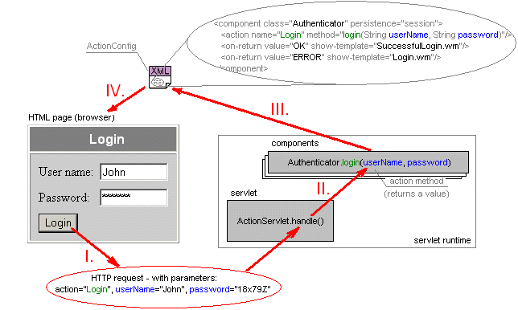

ActionServlet Specification
1. Definitions of terms
1.1 Components
are objects which action methods are invoked by HTTP requests.
Each component is referenced by ActionConfig, where
it has specified name, Java class and persistence.
Name server for referring component in <property>
and <output-variable> elements. Class determines
which class will be used to instantiate the component. Persistence determines durability
of a component object and may be of three types:
- "application" persistence - the component object exists in only in one
copy per servlet. This is useful for implementing "global" methods that manipulate
with common application data.
- "session" persistence - each HTTP session owns a single copy of the
componenent object. This is useful for implementing user specific data like
"shopping carts" etc.
- "request" persistence - for each HTTP request is created a new component
object (except for page reload, which uses the same component).
Each component class must have a public constructor with a single parameter of type
org.webmacro.as.ActionServlet, optionally it can have a second parameter of type
java.lang.String which will be passed the component name from ActionConfig.
If the component wants to be notified when it
is no longer used by ActionServlet, it should implement
Destroyed interface.
1.2 Action methods
implement the behaviour of a component. Each action method must be declared public.
To parameters of action method are passed values of HTTP parameters automatically
converted to Java types by type handlers}. The return values can be mapped
onto template names by <on-return>
element.
The action method to be invoked is chosen after the name of parameter 'action' and,
optionally, 'form' (if omitted, it has a default empty value: ""). For example,
"login" action would invoke someComponent.login(...) method. This binding is
done by <action> element.
1.3 Templates
You should be familiar with WebMacro templates
already. The new thing is that you can pass HTTP parameter value(s) from template
directly to the component's action method.
Example: the following HTML form defines a parameter named userName
and password (and of course, the mandatory 'action'):
<FORM METHOD="POST">
User name: <INPUT TYPE="Text" NAME="userName">
Password: <INPUT TYPE="Password" NAME="password">
<INPUT TYPE="Submit" NAME="action" VALUE="Login">
</FORM>
Values of these parameters can be easily passed to the action method:
public int login(String userName, String password)
Note: A similar effect can be achieved by GET method - using a link like:
<A HREF="LoginServlet?action=Login&userName=John+password=18x79Z">login as John</A>
1.4 Type handlers
See TypeHandler, SimpleTypeHandler
and CompositeTypeHandler for more information.
1.5 ActionConfig (XML configuration file)
has a simple XML format and is divided into four main parts:
<properties> (optional),
<templates> (optional),
<type-handlers> (optional) and
<components> (mandatory):
<?xml version="1.0"?>
<!DOCTYPE application SYSTEM
"http://dione.zcu.cz/~toman40/ActionServlet/dtd/ActionServlet_0_7.dtd">
<application>
<properties>
...
</properties>
<templates>
...
</templates>
<type-handlers>
...
</type-handlers>
<components>
...
</components>
</application>
ActionConfig filename must be passed to ActionServlet via a servlet init parameter named
"ActionConfig". For Servlet 2.2+ containers it is done in the servlet
tag in web.xml file.
Example (piece of web.xml):
<servlet>
<servlet-name>LoginServlet</servlet-name>
<servlet-class>org.webmacro.as.ActionServlet</servlet-class>
<init-param>
<param-name>ActionConfig</param-name>
<param-value>LoginServlet.xml</param-value>
</init-param>
</servlet>
For other environments constult your servlet runtime documentation.
1.5.1 The root <application> element may have optional repository
attribute, which specifies a directory where servlet components and other classes are stored
[TODO: future versions may accept also .jar repositories]. This attribute may be used only if you
don't subclass ActionServlet, otherwise it is expected that all classes are loaded from CLASSPATH
by the servlet runtime, as usually. Subelements of <application> are described
in the following sections.
Example:
<application repository="c:/servlets/App1/classes">
...
</application>
1.5.2 <properties> element contains one or more
<property> subelements, which have attributes name, value
and optionally component (reffers to component name).
Example:
<properties>
<property name="server.url" value="http://some.server.com"/>
<property component="DbAccess" name="max.connections" value="10"/>
</properties>
Value of each property is retrieved by getProperty(name) and
getProperty(component,name) metod.
ActionServlet components should be configured via properties with component attribute,
other properties should be considered global.
1.5.3 <templates> element contains one or more
<template> subelements, which are used to specify:
- which template is shown upon a new session - by is-new-session attribute (if this
attribute is never set to "true", the
newSession() method is
expected to do the job).
- which <output-variable>s will be set when the template
is shown (optional).
Each <template> element must have a name attribute specifying the name of
the template.
Example 1:
<templates>
<template name="Login.wm" is-new-session="true"/>
</templates>
Example 2:
<templates>
<template name="Login.wm"/>
<template name="Main.wm" is-new-session="true">
<output-variable name="isAuthenticated"
component="Authenticator" value="isAuthenticated()"/>
<output-variable name="user"
component="Authenticator" value="getUser()"/>
</template>
</templates>
In the second example is set WebMacro variable $isAuthenticated to the value returned by Authenticator.isAuthenticated()
and $user to the value returned by Authenticator.getUser() every time the Main.wm template is shown.
1.5.4 <type-handlers> element contains one
or more <type-handler> subelements, that bind type handlers to
appropriate Java types.
Example:
<type-handlers>
<type-handler type="my.types.Email" class="my.handlers.EmailHandler"/>
<type-handler type="java.util.Date" class="my.handlers.DateHandler"/>
</type-handlers>
1.5.5 <components> element contains one or
more <component> elements (with attributes class and persistence),
which may contain zero or more <action> and
<on-return> subelements.
Example:
<components>
<component class="Authenticator" persistence="application">
<action name="Login" method="login(String userName, String password)"/>
<on-return value="OK" show-template="SuccessfulLogin.wm"/>
<on-return value="ERROR" show-template="LoginError.wm"/>
</component>
<component class="SearchEngine" persistence="application">
<action name="Search" method="search(String str)"/>
<action form="Status" name="OK" method="getStatus()"/>
<on-return value="void" show-template="Main.wm"/>
</component>
</components>
1.5.5.1 Zero or more <action> elements, which bind
actions to components' action methods, can be specified inside each <component>
element (before <on-return> elements). Element <action> has attributes:
- name - specifies the name of 'action' (i.e. value of HTTP parameter
'action'), which will be bound to this component's action method,
- form (optional) - helps distinguish between different forms
with same actions (for example, if two forms contain same "OK" submit
buttons),
- method - contains action method declaration, which specifies
method name and its parameters. The return type and thrown exceptions are NOT
specified here. The types of parameters must be either primitive or fully
qualified class names (classes from java.lang package and
org.webmacro.servlet.WebContext needs not to be fully qualified).
Names of the parameters from the method attribute correspond to HTTP
parameter names (for WebContext the parameter name is ignored)!!!
Names of formal action method parameters in the source code may be different.
Example:
<component ...>
<action form="Search" name="OK" method="search(String str)"/>
<action form="Submit" name="OK" method="newURL(java.net.URL url)"/>
</component>
Element <action> can optionally contain one or more
<output-variable> subelements, which put additional
variables to WebContext of the action.
Example:
<action name="Login" method="login(String userName, String password)">
<output-variable name="user" component="Authenticator" value="getUser()"/>
</action>
1.5.5.2 Zero or more <on-return> elements
can be specified inside <component> element after <action>s.
Each <on-return> has two attributes:
- value - contains the name(!) of public static final field
of the component, which value will be compared to the return value of invoked action method.
A special name "void" is reserved for mapping of methods with void return type.
- show-template - contains the name of template to be shown if the values
match.
Example:
public class MyComponent {
public static final int OK = 0;
}
<component class="MyComponent" ...>
<action .../>
<on-return value="OK" show-template="SomeTemplate.wm"/>
<on-return value="void" show-template="OtherTemplate.wm"/>
</component>
1.5.6 Zero or more <output-variable> elements
can be specified inside <template>, <action> <on-return>
and elements. It has four attributes:
- name - determines name of the template $variable,
- component (optional) - reffers to the component's name from which the
value taken (the component is instantiated, if it doesn't yet exist),
- value - operator applied to the component (a method call, for example)
or to a $variable or it can be directly boolean, int, double or String value.
- if (optional) - specifies a condition which must be true in order to evaluate
the $variable.
Note 1: Output variables are evaluated in the specified order.
Note 2: First are set output variables of <action> and at last of
<template>.
Example:
<output-variable name="user" component="Authenticator" value="getUser()"/>
<output-variable name="name" value="$user.Name"/>
<output-variable name="number" value="123" if="$name == "admin""/>
See also: examples/OutputVars example.
1.5.7 All-in-one example
An example of ActionConfig may look like this:
<?xml version="1.0"?>
<!DOCTYPE application SYSTEM
"http://dione.zcu.cz/~toman40/ActionServlet/dtd/ActionServlet_0_7.dtd">
<application>
<properties>
<property name="max.users" value="500"/>
<property component="Authenticator"
name="password.retry" value="3"/>
</properties>
<templates>
<template name="Login.wm" is-new-session="true"/>
<template name="Main.wm">
<output-variable name="isAuthenticated"
component="Authenticator"
value="isAuthenticated()"/>
</template>
</templates>
<type-handlers>
<type-handler name="shop.types.Email"
class="shop.handlers.EmailHandler"/>
</type-handlers>
<components>
<component name="Main" class="shop.Main" persistence="application">
<action name="showMain" method="showMain()"/>
<action name="showGoods" method="showGoods()">
<output-variable name="goods" component="Main" value="getGoods()"/>
</action>
</component>
<component name= "Authenticator"
class="shop.Authenticator" persistence="session">
<action name="Login" method="login(String name,String passwd)"/>
<on-return value="OK" show-template="Main.wm"/>
<on-return value="ERROR" show-template="error.wm">
<output-variable name="retries"
component="Authenticator" value="getRetries()"/>
</on-return>
</component>
</components>
</application>
2. HTTP request processing
An example of typical lifecycle looks like this:

| I. | User clicks "Login" button -> HTTP request with parameters "action",
"userName" and "password" is generated and passed to handle() method of
the servlet. |
| II. | According to <action> mappings in ActionConfig, "login" method
is chosen and invoked - "userName" and "password" parameters value are passed to the method. |
| III. | Return value is mapped to template name by <on-return> element(s)
in ActionConfig (for example, if OK is returned by login() method, then "SuccessfulLogin.wm"
template name is chosen). |
| IV. | The chosen template is loaded, processed by WebMacro and returned to the browser. |
Detailed description of HTTP request processing follows:
- A HTTP request is passed to
handle() method.
ActionServlet requires that 'action' (and optional 'form') HTTP parameters
are defined in the request.
- A component, which action method is bound to the 'action', is created (with respect
to its persistance), if it doesn't yet exist.
beforeConversion() method of
ActionServlet is called.
- HTTP parameter values are converted to the values of Java types via type handlers.
- If overriden,
beforeInvoke() method is called.
- Appropriate action method is invoked (determined by <action> element).
- If overriden,
afterInvoke() method is called.
- If the return value of action method does not match any value of
public static final field of the component, then
onReturn()
method is called (otherwise <on-return> elements apply).
- All <output-variable>s for the action and to-be-shown template are set.
Exceptions to this schema happen if:
- conversion error occurrs - then
conversionError()
method is called,
- 'action' parameter is not defined in the HTTP request or is not defined for
specified 'form' - then
unassignedAction() is called,
- an exception is thrown by action method - then
onException()
method is called.
Note: ActionServlet informs components when they are no longer used - see Destroyed interface.
3. Development using ActionServlet (roles)
The development process with ActionServlet is divided into several separate tasks, which
can be performed by different roles:
- Role: Designer
- Designs WebMacro templates - they provide the look and feel of the web application.
- Role: Developer
- Programs components - they encapsulate the bussiness logic.
- Programs type handlers - they enable custom HTTP parameter type conversions.
- Subclasses ActionServlet to modify its behaviour (optional).
- Role: Assembler
- Creates ActionConfig - it binds actions to components methods, maps return values
to templates, Java types to type handlers, assigns template variables and configure
properties.
- Packages the web application (note: servlet init parameter ActionConfig
must be passed to ActionServlet - usually via web.xml file).
- Role: Deployer
- Deploys the web application - depends on the servlet runtime (usually in .war)
Advantages:
- Designer needs not to know Java, but only the simple WebMacro scripting language.
- Developer does not care about the look and feel (HTML code).
- Components can be reusable - assembler can make application from existing components.
|